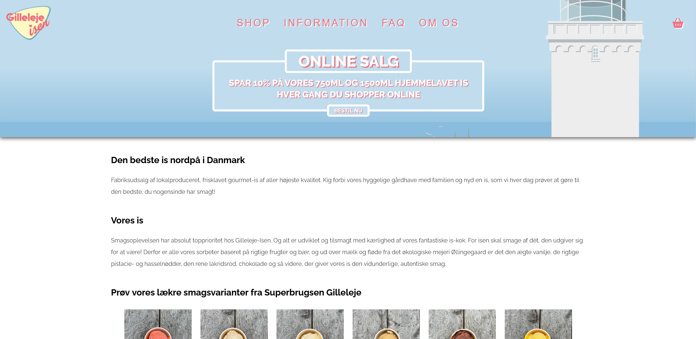

About Me
I am a passionate web developer with experience in front-end technologies like HTML, CSS, and JavaScript. I love creating beautiful and functional websites.
Projects
Gilleleje-Isen
The Gilleleje-Isen website redesign project aimed to transform the online presence of the ice cream company, Gilleleje-Isen. The primary objective was to enhance user experience, improve brand visibility, and streamline online operations for the company.
Brian Madsen
The Brian Madsen Car Dealership Website Redesign project aimed to revitalize the online presence of the car dealership, Brian Madsen. The objective was to reinforce brand identity, and facilitate seamless interactions for potential car buyers and existing customers.

Glemmekassen
The Glemmekassen website redesign project aimed to overhaul the online platform for the fictional lost and found company, Glemmekassen. The objective was to create a user-friendly, and visually appealing website.